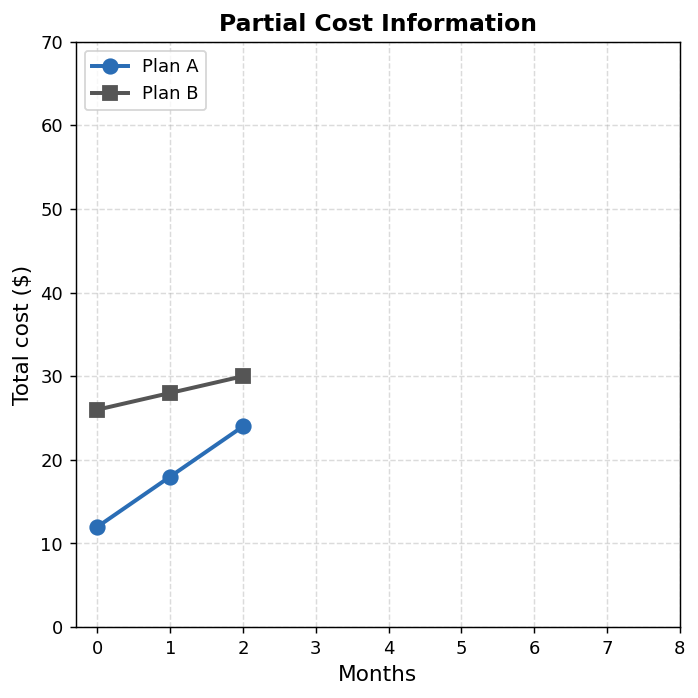
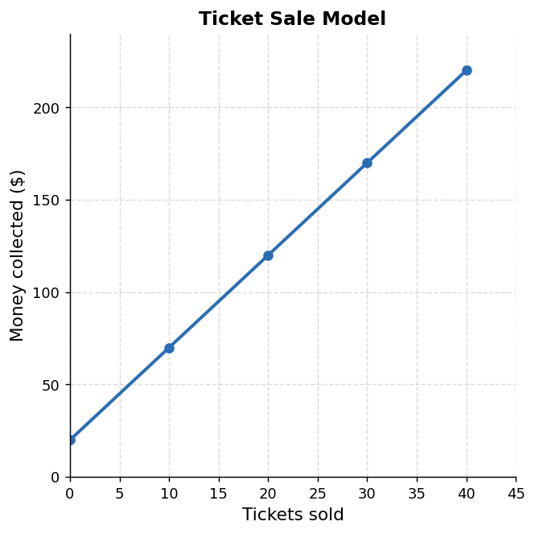
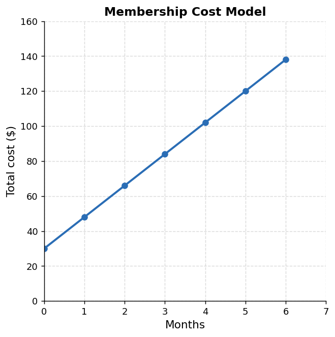
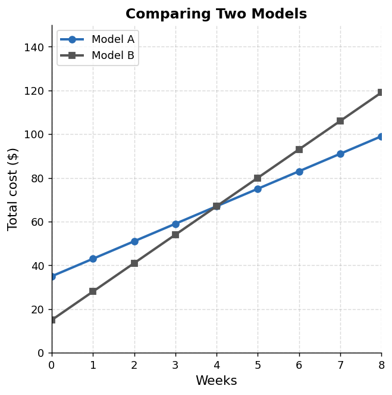

Mathematical idea: A useful equation model connects the operations, variables, units, and solution back to the real situation they came from.
Today we will practice defining variables, checking reasonableness, solving equations, interpreting solutions, and comparing equation models.
Students will write, solve, and interpret equations that model situations.
I can statements
This is a long-range preview for future lessons. Do not solve it today. Instead, annotate it individually. Circle anything familiar, underline symbols or directions that seem important, and write notes about what information you think will be needed later.
As you annotate, ask yourself: Which plan seems better right now? Could that change? What would you need to be sure?
Future Task — Two-Plan Decision
A customer is comparing two phone protection plans. The table and graph below show only the first three months of data.
| Months | 0 | 1 | 2 |
|---|---|---|---|
| Plan A (\$) | 12 | 18 | 24 |
| Plan B (\$) | 26 | 28 | 30 |

Plan A: Lower starting cost, higher monthly rate.
Plan B: Higher starting cost, lower monthly rate.
Which plan costs less over time? Can you make a confident recommendation right now?
Directions
Read the introduction aloud with a partner or in a small group. As you read, annotate the text by highlighting important ideas, circling key vocabulary, and writing short notes about connections, questions, or predictions in the margins.
An equation is a mathematical sentence that says two quantities are equal. In a real situation, an equation can be used as a model. A model is not just a calculation. It is a way to represent what is happening.
When we write an equation from a situation, we need to decide what each variable means. We also need to decide which number is a starting amount, which number is repeated, and what total or target value matters.
Solving an equation gives a value. Interpreting the solution means explaining what that value represents in the situation. A number might be mathematically correct but still not make sense if the units or context do not fit.
In this section, we will connect equations, tables, graphs, and contexts so that solutions have meaning.
Stop and Discuss
Before writing or interpreting an equation, be specific about what each part represents.
Strong variable definition: Instead of "$x$ = tickets," write "$x$ = the number of tickets sold."
The school drama club collects a one-time donation and then sells tickets. A possible model for money collected is $M=5t+20$.

A bike rental shop charges a fixed fee when you pick up the bike, plus a cost for each hour rented.
Before writing and solving an equation, make a prediction about the answer.
After solving, compare your result to your prediction. If they disagree, decide which one is wrong.
A fitness center charges a joining fee and a monthly membership cost. The model is $C=18m+30$.

A student wants to know when the total cost will reach \$120.
A streaming service charges a setup fee and a monthly subscription. The model is $C=9m+15$.
Student claim: "To find when the total cost reaches \$60, I solved $9m+15=60$ and got $m=5$. So the answer is 5 dollars."
Stop and Discuss
Can two students get the same numerical solution but give different interpretations? Give a specific example — describe what the solution is and what each interpretation would say.
When evaluating a student's solution, errors can appear in three different places. Check each one separately.
A student might get the correct number but misname the unit, or write a valid equation but mis-solve it. Identify exactly where the problem is.
A community center charges \$12 per class plus a \$24 registration fee. A student writes $T=12c+24$ and solves $12c+24=84$, getting $c=5$.
Student conclusion: "The solution means the total cost is 5 classes."
A school club orders shirts. There is a one-time \$40 design fee and each shirt costs \$8.
Student work: "I wrote $8(s+40)=200$. I solved and got $s=-15$, so the club should order negative 15 shirts."
To build an equation model from a situation:
To compare two models, ask: Which model gives a lower cost at the beginning? Which model gives a lower cost after many time periods? Is there a point where they are equal?
A school fair charges a \$10 entry fee and \$3 for each ride ticket. Let $r$ represent the number of ride tickets purchased and $C$ represent the total cost.
Two equipment rental companies offer weekly plans.

Company A: $C=8w+35$
Company B: $C=13w+15$
An equation model is strongest when the equation, variable definitions, solving steps, units, and interpretation all refer to the same situation. Writing an equation without defining variables, or solving without interpreting, leaves the work incomplete.
When evaluating a solution, check three places separately: the model, the solving, and the interpretation. An error in any one of these places makes the conclusion unreliable, even if the other two are correct.
When comparing models, ask which is better for the specific question. A lower starting cost does not mean lower total cost — the rate matters more over time.
Look back at the future task. Do not solve it yet. Highlight one part that makes more sense now than it did at the beginning. Circle one part that still feels unfamiliar. Write one sentence about what representation you would look at first.